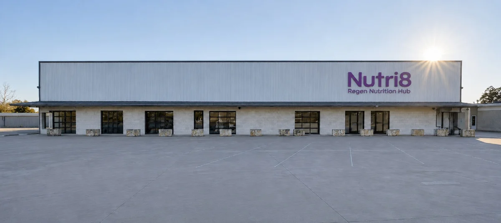
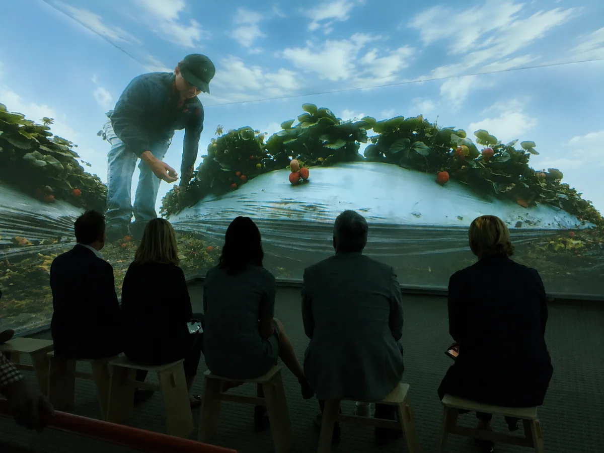
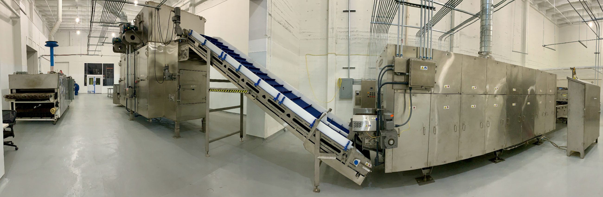

First contract botanical grow: Calendula.
Educate. Grow. Process.
In Brenham, Texas, the first Nutri8 Regen Nutrition Hub is in build-out — a 16,000 sq ft high-tech facility where regional farmers learn regenerative practices, grow under contract, and see their crops transformed into premium ingredients. The Hub supplies Nutri8, its affiliated ingredient company, and offers toll processing to the botanical industry.

The Hub exists to help put it back — we will train regional farmers in regenerative practices. Regenerative farming rebuilds the soil, healthier soil packs more nutrition into the crop, and processing close to the field keeps that nutrition in the food. And farmers earn more for growing it better.

